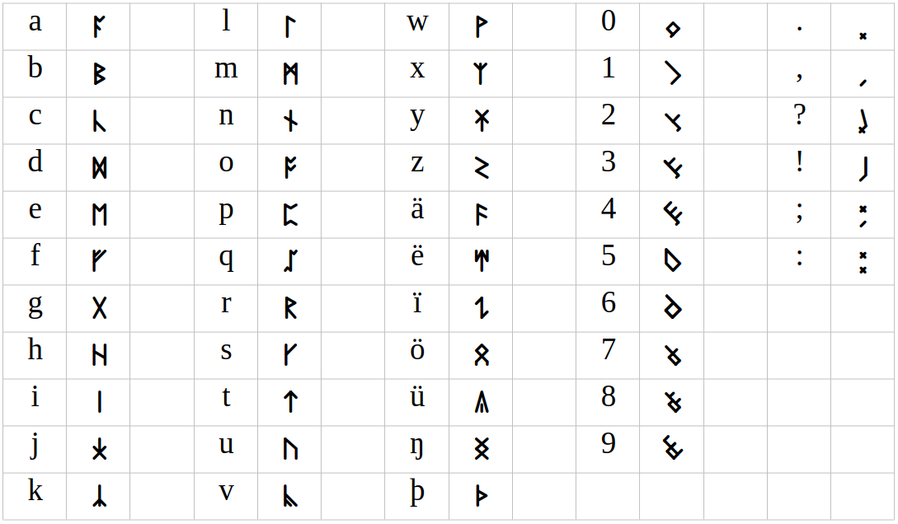
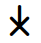
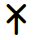
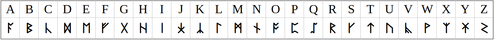
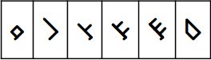
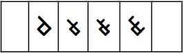
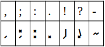

This site is a companion to a book fully written in ‘Anglish Runes’. The book is still a work in progress but as part of creating the book I had a requirement for an easy to use runic font. Since I didn’t find anything suitable for my needs I created one. The font is in a usable state, so I decided to make it available to the general public.
Anglish Runic Font
Overview
The Anglish Runic Font is designed for transliteration of English written in Latin script to English written in Runic script.
The font is build upon Noto Sans Regular, with the Latin letters (glyphs) replaced with those of an Anglo-Saxon/Frisian Futhorc Runes based script. The following glyphs are replaced:
- Lower case letters a to z and ä, ë, ï, ö, ü, ŋ (ng), þ (th)
- Upper case letters (same as lower case just drawn taller using the same stroke width.)
- Digits 0 to 9
- Punctations marks “.,?!;:”
This is an image of the runes being rendered in the font.

If your browser supports custom fonts (it likely will) you will see them in this table.
The mapping of those runes and the runes themselves are intended for practical use and as such workability has been prioritised over historical accuracy. You can read more about this in the Development section. This font is free to use, both privately and commercially based on the SIL Open Font License, a requirement as it itself is based on the Noto Project.
The kerning tables (spacing between each letter) have been programmatically defined, they should be serviceable for standard text. Though if you do any graphic design with these, you probably want to nudge them to your preference, like you would do for any font type.
Download
The Name
Although the term ‘Anglish’ is a term used by a variety of people to indicate English with non-Germanic originating words removed, I have misappropriated it to name the font after it, with the reasoning that it’s a script with the non-Germanic glyphs removed.
Historical Perspective
The runes are based on the Anglo-Saxon/Frisian Runes (Futhorc) variance which, according to Wikipedia, have been used in England and the North of Netherlands from the 5th century up until the high middle ages.
Modern writing of runes, roughly falls in two categories. Those that write it phonetically and use the runes to write out the sounds, often using the historical accurate word. And those that replace the letters with corresponding runes using common spelled words. The latter is made more difficult as there is not a one to one mapping of Runic and Latin letters.
For that reasons I decided to adapt my own font.
I choose specifically Futhorc runes to work upon as I feel this is more correct then using earlier Elder and Younger Futhark or later derived runes like Medieval or Dalecarlian, as the latter two where used primarily in the Scandinavian regions and not in England.
Development
The premise is that for each common letter in the Latin Script I needed and Equivalent in Runic Script. Runes are characteristically composed of straight lines. This is hypothesised due to medium dependency according to ‘The world’s writing systems by Daniels, Peter T; Bright, William, 1928-2006, Section 25: The Runic Script; page 335’, being the exact quote “The epigraphic character of runic lettering, with its avoidance of curves, may have resulted from initial scratching of runes into wood…” .
I have noticed that many runic scripts also avoid horizontal lines, my hypothesis is that carvings where done left to right, due to right hand being dominant and thus holding the scratching implement. Thus writing would have been along the horizontal axis. That means that when a part of a tree is split to provide a blank to write on, the grain of the wood would also be horizontal. If you would carve horizontal lines you increase the likelihood of unintentionally splitting the wood again.
On the surface this makes no sense, as the surviving material we have is either thick wood, metal or stone, neither having any real danger of splitting. However I further hypothesis that the ‘daily’ writing was done on much thinner pieces of wood, think popsicle sticks and then the risk of splitting is very real. There is precedence in that hypothesis, for example, the Bryggen Rune #B149.
As such I have taken the above as a design philosophy.
Mapping of the letters
What letters are represented by which sound and thus by which rune is a rather debated subject. My approach was to stay as middle of the road as possible, or more accurately, the least amount of surprises whilst not shooting myself in the foot.
I am fully aware that vowels shifts, regional dialects and class variation makes this for modern English already a difficult topic, never mind about something that is historical. To remain practical I had to draw the line somewhere and this is what I came up with, so no real justifications.
Base
My primary source is the 10th century “Seax of Beagnoth” / “Thames Scramasax”, which gives:
| a | b | c | d | e | f | g | h | i | j | k | l | m | n | o | p | q | r | s | t | u | v | w | x | y | z |
|---|---|---|---|---|---|---|---|---|---|---|---|---|---|---|---|---|---|---|---|---|---|---|---|---|---|
| ᚪ | ᛒ | ᚳ | ᛞ | ᛖ | ᚠ | ᚷ | ᚻ | ᛁ | ᛄ | ᛚ | ᛗ | ᚾ | ᚩ | ᛈ | ᚱ | ᚴ | ᛏ | ᚢ | ᚹ | ᛉ |
Note that the S doesn’t use the more common ᛋ but the alternative form ᚴ, which is an upside down C, in this case indicating a soft C. To fill the empty spaces out (K, Q, V, Y, Z) I did the following;
K
For the letter K, the upside down X is used; ᛣ , which is used in the 8th century “Ruthwell Cross”, indicating a hard C on those carvings.
Q
For the letter Q I used ᛢ, there is little evidence that there was an actual letter for it.
According to R.I. Page ‘An Introduction to English Runes’ on page 43:
Apparently they also invented new runes, either filling gaps they felt existed, or providing runic equivalents for Roman letters not represented in the epigraphical futhorc: ᛡ ‘io’, ᛢ ‘q’, ᛥ ‘st’. These were never, I think, intended for practical use, and are therefore only curiosities in the history of runic studies, showing that the eccentricities of some present-day runologists were anticipated when runes were still a living, or perhaps a dying, script.
But again as I want to use it for practical purposes, this is good enough for my purposes.
V
For the letter V, I used the pattern I’ve seen above of making a similar sounding rune upside down (as in with c to s and x to k), in this case the similar sounding letter being F (ᚠ).
Y
For the letter Y my approach was to use the phonetic related J upside down, however as the rune ᛄ is symmetric I couldn’t us it as is. Alternatively I also couldn’t use the rune ᚣ which normally is used for that phonetic sound, as this is clearly a derivative of the letter U, runic ᚢ, and this was likely to indicate the ue (ü) sound.
My solution to this J/Y problem was to create a ‘new’ rune based on the alternative ᛡ (note the alternative has no historical precedence, see -io- in quote of letter Q) but is easier to carve then the common form. However that is often a symmetric rune, so I adapted it to move the cross to the bottom, thus the rune for J is  and the rune for Y is , this has a secondary advantage that it hints that the J sound is related to the G sound, and runic G is of course ᚷ.
Z
For Z, I used the conventional rune for S (ᛋ) upside down and rotated. The result is a rune that looks very close to Latin script letter Z.
Comparison
So the addition to the seax table using ‘standard’ rune from the wider runic set is:
| a | b | c | d | e | f | g | h | i | j | k | l | m | n | o | p | q | r | s | t | u | v | w | x | y | z |
|---|---|---|---|---|---|---|---|---|---|---|---|---|---|---|---|---|---|---|---|---|---|---|---|---|---|
| ᚪ | ᛒ | ᚳ | ᛞ | ᛖ | ᚠ | ᚷ | ᚻ | ᛁ | ᛡ | ᛣ | ᛚ | ᛗ | ᚾ | ᚩ | ᛈ | ᛢ | ᚱ | ᚴ | ᛏ | ᚢ | ᚹ | ᛉ |
With my changes and my design it looks like this:

I also wanted to preserve the thorn þ and eng ŋ runes, which are use to substitute ‘th’ and ‘ng’ with ᚦ and ᛝ. The othala ᛟ is in English related to the letter O, when pronounced like in ‘word’.
As mentioned before the ᚣ rune is likely to be diphthong like long vowel for U. Similarly for vowel combinations like ea, like in Bear, the ᚫ is used whilst the ea in year is more like long ee, which is the rune ᛠ. Another one is the long i for example in nice, that rune would be ᛇ.
So putting that together it will look like this:

Note that the ᛇ has been in my font flipped vertically, this is done to make it more distinct from the ᛚ indicating the L sound.
To make the Anglish runes applicable with modern texts I needed to add the basic digits and punctuations, these have no historical precedence as such I created my own.
For the digits, I loosely based it on the shape my left hand makes when counting, with the closed fist being 0, thumb out being 1, thumb and pointer 2, then up to 5 which symbolised a flat hand.

For digits 6 to 9, I repeated the design for 1 to 4 but added a ‘second’ hand type base.

For the punctuation marks, I just tried to give it some relative meaning and commonality with modern punctuations.

Usage
Personally, for my use, I am going to use the non a-z runes but only if back transliteration will result in the ‘correct’ English spelling.
Here is how I determine if I am going to replace vowels/combinations:
ea
- As in Bear > ä > ᚫ
- As in Dear > ë > ᛠ
- As in React or Bread > ea > ᛖᚪ
i
- As in Kite > ï > ᛇ
- As in Kit > i > ᛁ
o
- As in hot > o > ᚩ
- As in word > ö > ᛟ
ue
- As in cue > ü > ᚣ
- As in duet > ue > ᚢᛖ
th
- As in thin (þ) > þ > ᚦ
- As in this (ð) > þ > ᚦ
- As in hothead > th > ᛏᚻ
ng
- As in English > ŋ > ᛝ
- As in ongoing > ng > ᚾᚷ
Writing of the special characters
On linux and unix systems you can use the compose key (by default alt-gr) and key combinations. On Windows you can either use alt keys or install a program that adds linux like compose functionality, for example this. Here is a table of compose key descriptions.
| Upper | Lower | As in | Unicode Upper | Unicode Lower | Compose + |
|---|---|---|---|---|---|
| Ä | ä | Bear | 00c4 | 00e4 | “ then A or a |
| Ë | ë | Hear | 112 | 113 | “ then E or e |
| Ï | ï | Hide | 00cf | 00ef | “ then I or i |
| Ö | ö | Word | 00d6 | 00f6 | “ then O or o |
| Ü | ü | Cues | 00dc | 00fc | “ then U or u |
| Ŋ | ŋ | Ping | 014a | 014b | N then G or n then g |
| Þ | þ | The | 00de | 00fe | T then H or t then h |
Spaces
With runes it is common to indicate spaces with either a colon or middle dot, personally I prefer the middle dot, which can be easily written with compose then “.” then “-” resulting in “·”.